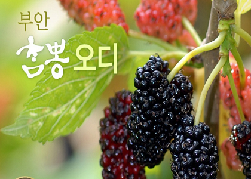

동의보감 탕액편(湯液篇)에 '까만 오디는 뽕나무정령(精靈)이 모여 있는 것이며, 당뇨병과 오장에 이로우며, 배고픔을 잊게 해주고, 오래 먹으면 귀와 눈을 밝게 한다' 라 했으며, 오디를 오래 먹으면 '백발이 검게 변하며 노화를 방지하고 간장과 신장을 보익하고 음혈과 피를 길러주며, 풍을 없애준다'고 기록되어 있다.
뽕나무 오디는 과실로 뿐만 아니라 성인병예방 등 국민건강을 지켜주는 기능성 식품인 동시에 양잠농가의 소득을 증진시켜주는 소중한 작목이다.
변비 개선 및 다이어트에도 도움이 된다.